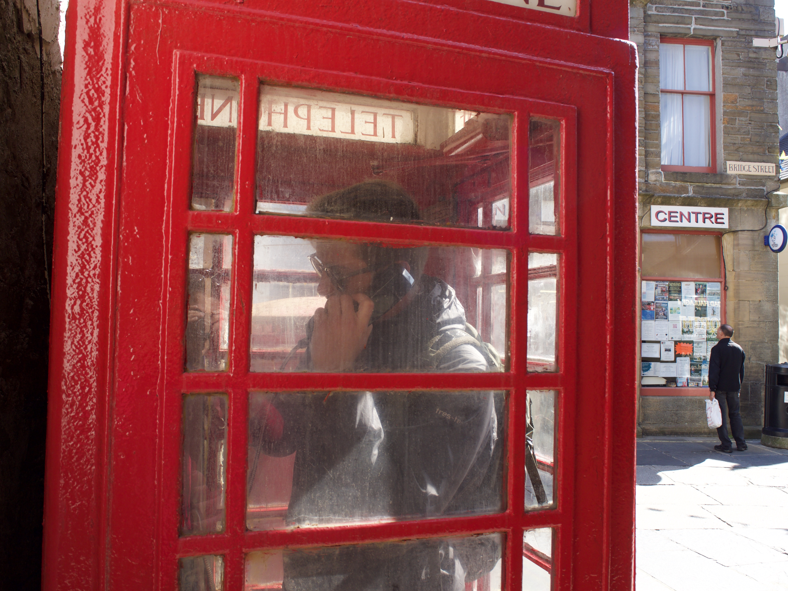
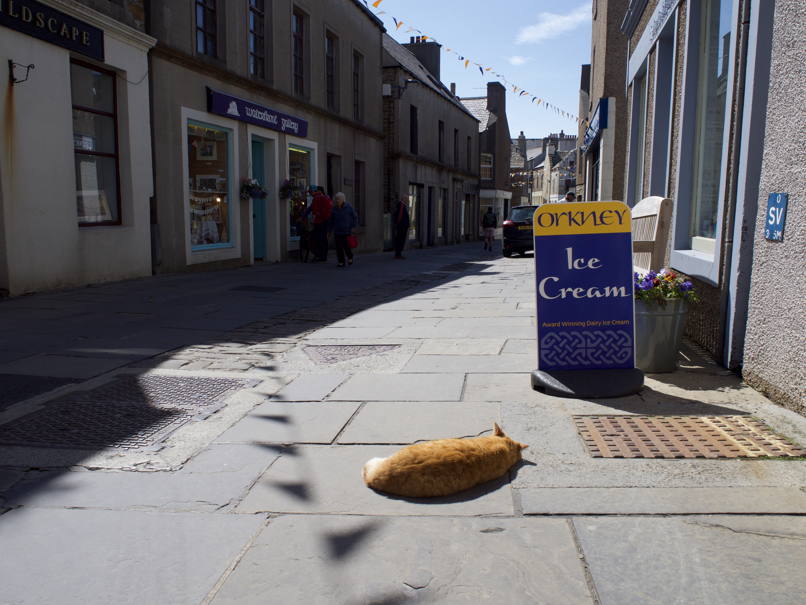

Un week-end aux Orkney Islands
Le temps d'une escapade.

Kirkwall
Kirkwall est la "capitale" de l'archipel des Orcades, située sur l'île principale. Avec un peu moins de 10 000 habitants, l'archipel possède donc environ 2,5 habitants par kilomètres carrés...pas grandes monde vous me direz. Ces îles sont cependant riches en histoire et en activités. En effet, Kirkwall est une ancienne ville nordique. En arrivant à Kirkwall, on a l'impression d'avoir atterri en Scandinavie. Une merveille du XIe siècle, la ville fut fondée par le comte Rognvald Brusason qui y construisit son royaume. Cette petite ville n'est qu'un exemple du passé de l'archipel, avec ses rues principales étroites et ses allées mystérieuses. Le tout se trouve bien sûr dans l'ombre de la magnifique cathédrale St Magnus. À une époque lointaine, la ville était construite autour du port et ne comptant que quelques maisons. Kirkwall est désormais un centre animé avec des restaurants, des musées, des pubs et des boutiques.
Stromness
Nous prenons le bus pour nous diriger vers la petite ville de Stromness. Le bus empreinte une route traversant des paysages typique d'ici. De grandes plaines verdoyantes, puis des plaines plus foncées ou encore une vue imprenable sur la baie Scapa Flow. Une chose nous surprend : pas un seul arbre, pas une fôret ici. Puis nous comprenons vite pourquoi : le vent. Ça souffle ici, je n'ose même pas imaginer l'hiver... Nous arrivons, après 30 minutes de bus, à la petite ville portuaire de Stromness. Nous partons nous promener dans les petites rues du centre ville. À chaque coin de rue, nous tournons la tête et nous aperçevons la mer. Il y a pas mal de boutiques artisanales et de centre ville. Nous n'avions que 1h30 pour la visiter et manger un bout. Nous achetons de quoi nous faire des sandwichs et pique-niquer près de l'eau. Nous repartons dans un bus impériale vers Kirkwall pour prendre notre ferry en direction de notre B&B pour la nuit...
Nuit sur Sanday
Visite d'une distillerie